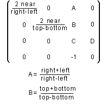
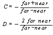
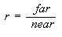

title: glFrustum function (Gl.h) description: The glFrustum function multiplies the current matrix by a perspective matrix. ms.assetid: aa44c3fc-3bf6-4ef3-bb29-98e3056cdad3 keywords:
The glFrustum function multiplies the current matrix by a perspective matrix.
void WINAPI glFrustum(
GLdouble left,
GLdouble right,
GLdouble bottom,
GLdouble top,
GLdouble zNear,
GLdouble zFar
);
left
The coordinate for the left-vertical clipping plane.
right
The coordinate for the right-vertical clipping plane.
bottom
The coordinate for the bottom-horizontal clipping plane.
top
The coordinate for the bottom-horizontal clipping plane.
zNear
The distances to the near-depth clipping plane. Must be positive.
zFar
The distances to the far-depth clipping planes. Must be positive.
This function does not return a value.
The following error codes can be retrieved by the glGetError function.
| Name | Meaning |
|---|---|
| GL_INVALID_ENUM | zNear or zFar was not postitive. |
| GL_INVALID_OPERATION | The function was called between a call to glBegin and the corresponding call to glEnd. |
The glFrustum function describes a perspective matrix that produces a perspective projection. The (left, bottom, zNear) and (right, top, zNear) parameters specify the points on the near clipping plane that are mapped to the lower-left and upper-right corners of the window, respectively, assuming that the eye is located at (0,0,0). The zFar parameter specifies the location of the far clipping plane. Both zNear and zFar must be positive. The corresponding matrix is shown in the following image.

The glFrustum function multiplies the current matrix by this matrix, with the result replacing the current matrix. That is, if M is the current matrix and F is the frustum perspective matrix, then glFrustum replaces M with M F.
Use glPushMatrix and glPopMatrix to save and restore the current matrix stack.
Depth-buffer precision is affected by the values specified for zNear and zFar. The greater the ratio of zFar to zNear is, the less effective the depth buffer will be at distinguishing between surfaces that are near each other. If

roughly log2 (r) bits of depth buffer precision are lost. Because r approaches infinity as zNear approaches zero, you should never set zNear to zero.
The following functions retrieve information about glFrustum:
glGet with argument GL_MATRIX_MODE
glGet with argument GL_MODELVIEW_MATRIX
glGet with argument GL_PROJECTION_MATRIX
glGet with argument GL_TEXTURE_MATRIX
| Requirement | Value |
|---|---|
| Minimum supported client | Windows 2000 Professional [desktop apps only] |
| Minimum supported server | Windows 2000 Server [desktop apps only] |
| Header | Gl.h |
| Library | Opengl32.lib |
| DLL | Opengl32.dll |